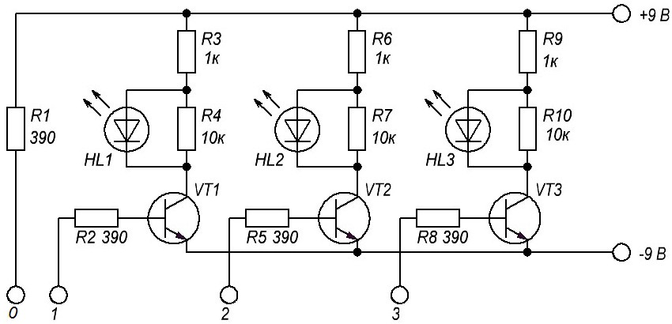
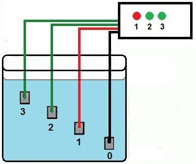
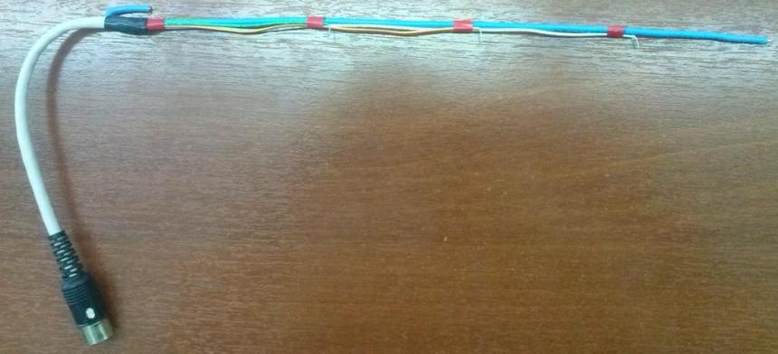
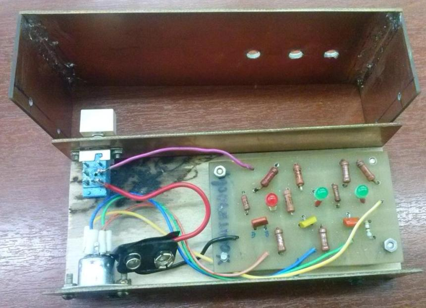

Индикатор уровня воды на транзисторах
Бывает так, что надо узнать, сколько воды осталось в какой-либо непрозрачной емкости. Например, цистерна, бочка или любая другая, закопанная в землю либо поднятая на высоту так, что не видно её содержимого. Тогда на помощь придет датчик уровня воды, схема которого показана на рис. 1.

Рис. 1 - Схема индикатора уровня жидкости
Таблица 1
| Обозначение | Номинал | Примечание |
|---|---|---|
| GB1 | 9 В | Батарея «Крона» |
| R1, R2, R5, R8 | 390 Ом | Постоянный резистор, мощность 0,125-0,25 Вт |
| R3, R6,R9 | 1 кОм | Постоянный резистор, мощность 0,125-0,25 Вт |
| R4, R7, R10 | 10 кОм | Постоянный резистор, мощность 0,125-0,25 Вт |
| HL1 | АЛ307АМ | Светодиод красный |
| HL2, HL3 | АЛ307ВМ | Светодиод зеленый |
| SA1 | П2К | Переключатель с фиксацией |
| VT1-VT3 | КТ315 | Транзистор биполярный. С любым буквенным индексом |
Схема состоить из трех одинаковых модулей индикаторов. Каждый модуль содержит 3 резистора, транзистор и светодиод. Зондирующими датчиками могут служат медные провода, которые погружены в воду (рис. 2). Один из датчиков (0) самый длинный является опорным датчиком, к нему подводится напряжение питания. Питается схема от батарейки типа «Крона» напряжением 9В.
В момент поднятия воды в баке до уровня, который определяется положением зондирующего датчика в баке, база транзистора получает небольшое положительное смещение через сопротивление, состоящий из сопротивления резистора R1, резистора в цепи базы и массы воды. В результате транзистор открывается и загорается соответствующий сигнальный светодиод HL.
Когда в стакане 1/3 воды - горит только красный светодиод. Когда 2/3 - загорается еще и зеленый. А когда стакан заполнен по верхнюю линию - горят все светодиоды. В данном случае схема содержит всего 3 светодиода, но можно делать и больше. Тогда уровень воды будет виден более точно.

Рис. 2 - Монтажная схема индикатора уровня жидкости

Рис. 3 - Вариант конструкции щупа

Рис. 4 - Вариант конструкции индикатора уровня жидкости